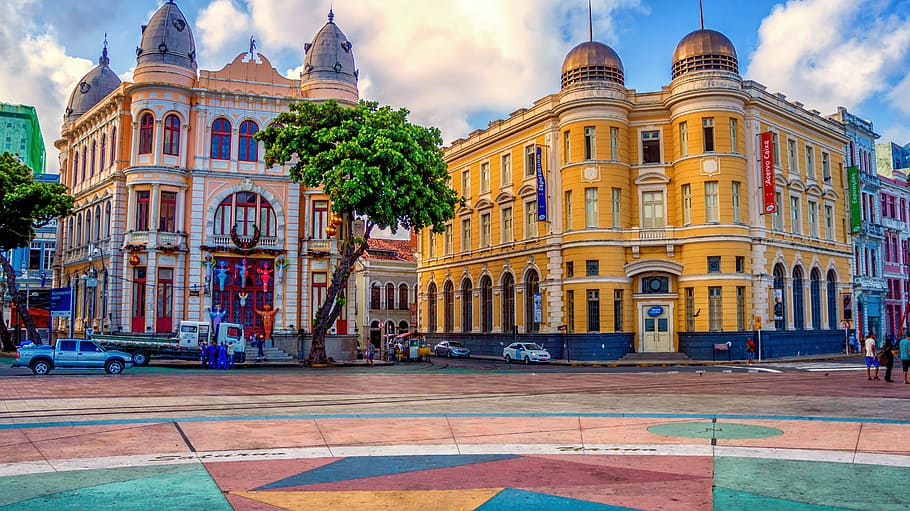
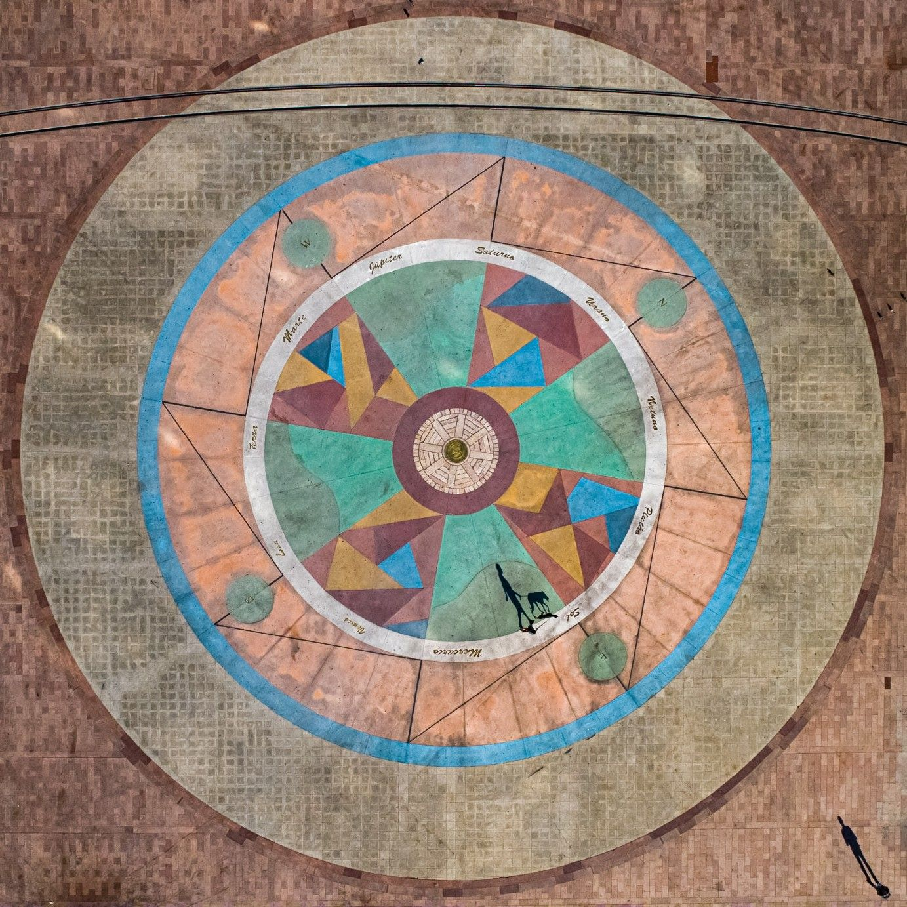
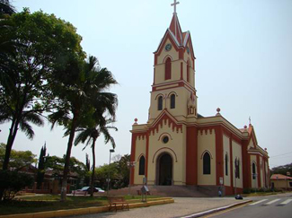

Descubra o coração do Recife no Marco Zero, onde história e cultura se encontram em um cenário deslumbrante. Explore e sinta a energia vibrante deste ponto turístico icônico. Não perca a oportunidade de visitar museus e participar de eventos culturais que tornam este lugar imperdível!
Um pouco sobre a história de Marco Zero
O Marco Zero é o ponto de partida das estradas que irradiam do Recife, marcado pela icônica Rosa dos Ventos de Cícero Dias. Este local histórico é onde a cidade nasceu e prosperou, servindo como palco para eventos culturais vibrantes. No coração do Bairro do Recife, o Marco Zero conecta passado e presente, celebrando a rica herança cultural da região. Visite e sinta a energia única deste marco emblemático!
Outra atração importante localizada no Marco Zero é, a Igreja Matriz Nossa Senhora do Monte Serrat é um tesouro histórico e arquitetônico. Com sua fachada imponente e interior ricamente decorado, a igreja oferece um mergulho na fé e na cultura de Portugal. Venha admirar os detalhes artísticos e desfrutar de um momento de paz e reflexão. Uma visita imperdível para quem aprecia história e beleza.
